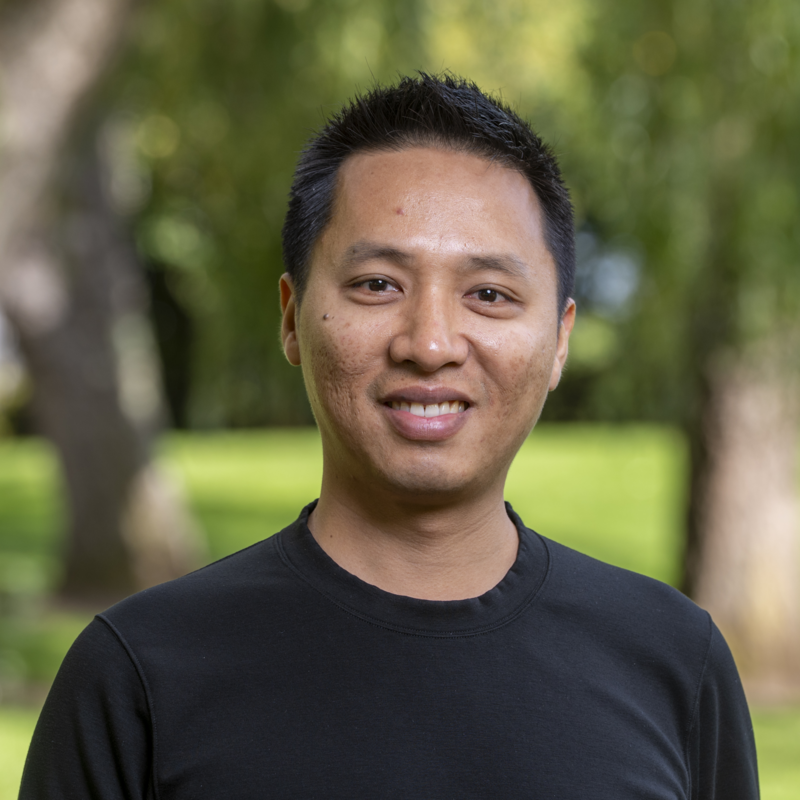

About me
I am Cuong Nguyen (and in my native 🇻🇳 language: Nguyễn Cao Cường).
I am currently holding a lecturer position at the Centre for Vision, Speech and Signal Processing, University of Surrey, UK.
I am interested in machine learning research, especially probabilistic graphical model, Bayesian inference and statistical learning.
